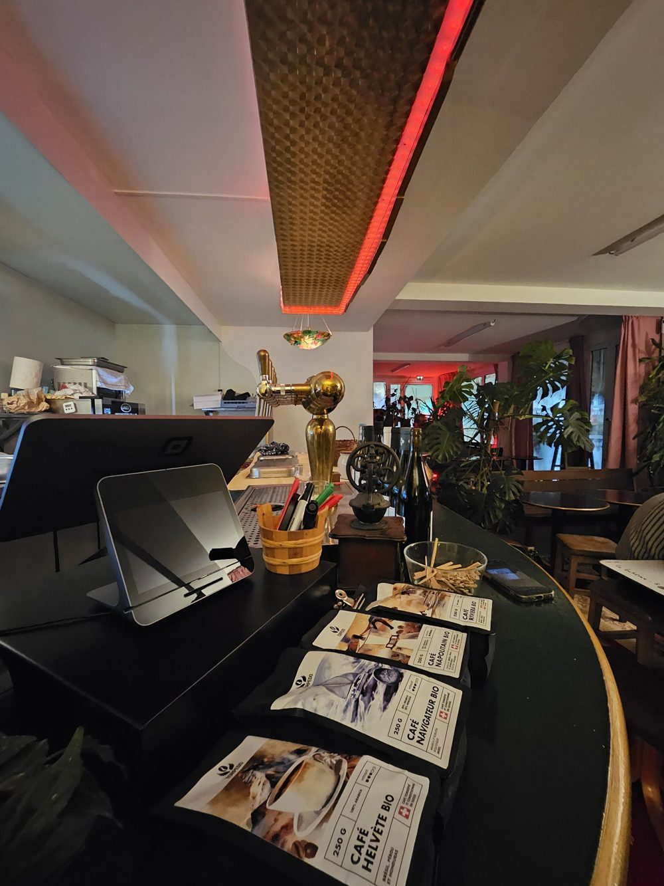
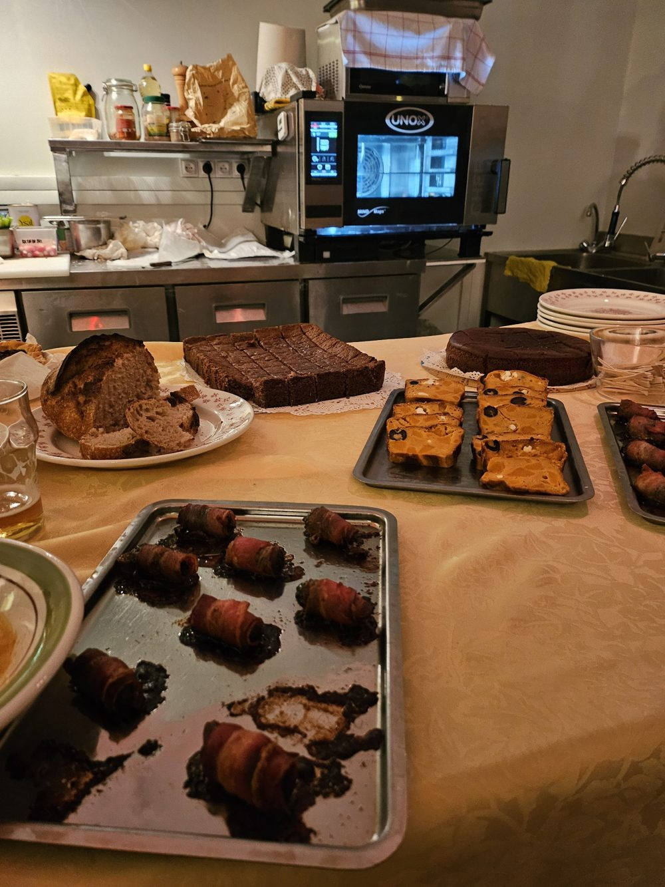
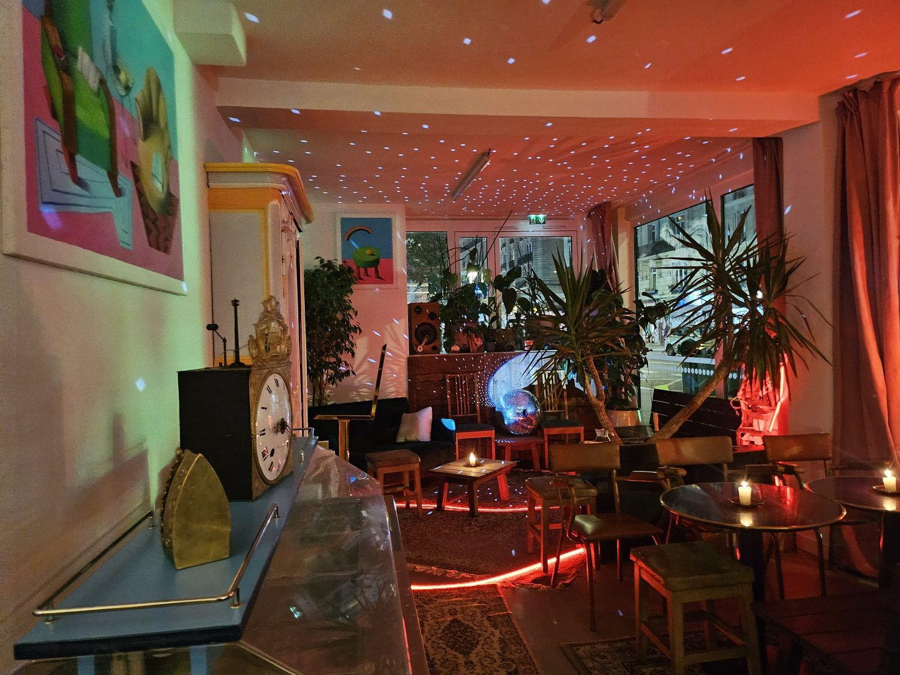
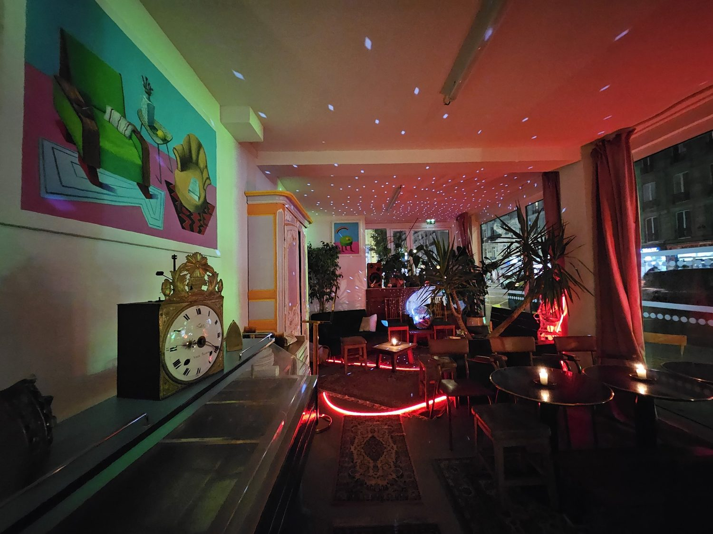
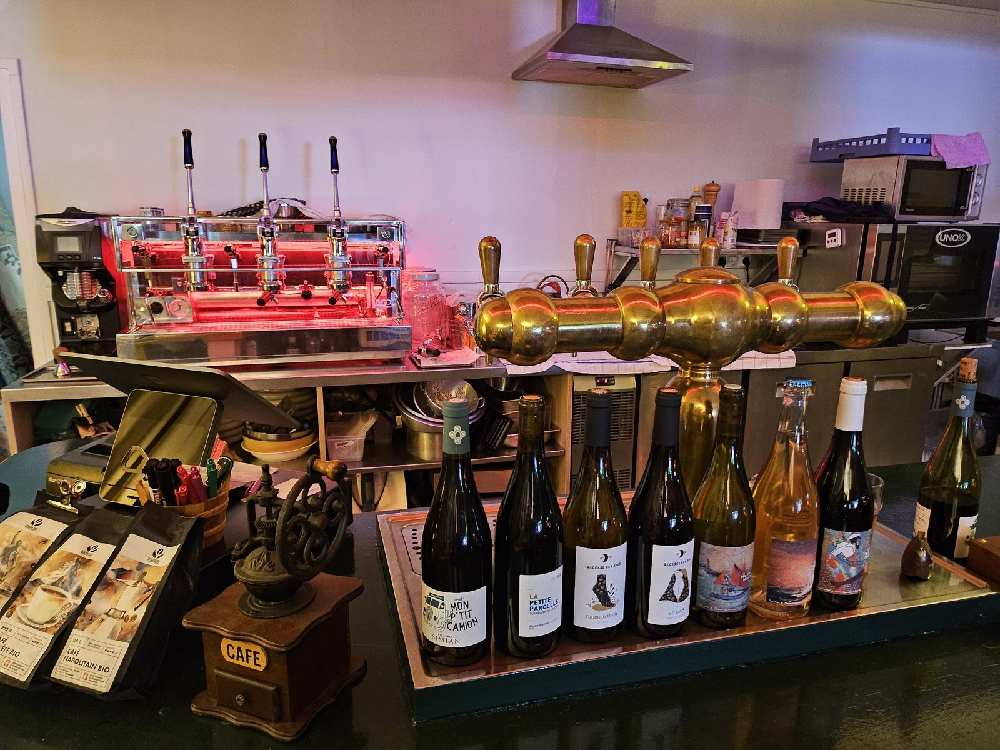

Une estrade corail, des fauteuils moutarde, une grande peinture et de vieilles enceintes en bois. On y boit un café en regardant la rue, et on reste pour une bière artisanale, un verre de vin ou un peu de musique.
La carte
Elle s'écrit à l'ardoise et change au fil des arrivages.
Bières artisanales
Cafés bio
Helvète, Navigateur, Napolitain, Riviera
Vins
Crépus'bulles
pétillant naturel, vif et fruité
Le Grand Frais
blanc frais
Voulez-vous Gamay avec moi ?
rouge léger
La Petite Parcelle, Terrasses du Larzac 2021
rouge ample
Toucher Terre 2022
chenin, minéral
Velours 2024
pineau d'Aunis léger
Mon P'tit Camion
rouge juteux
Le lieu
Estrade corail, comptoir vert cerclé d'or, enceintes en bois, une boule à facettes près de la vitrine et beaucoup de plantes. Le soir, des bougies sur les tables et des petites étoiles au plafond.





Venir
42 rue Marx Dormoy
75018 Paris
Métro Marx Dormoy, ligne 12
Horaires : [à compléter]
Téléphone : [à compléter]
Instagram : [à compléter]